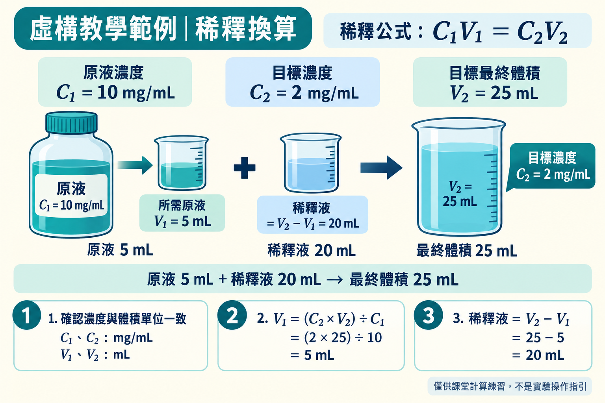

AI AGENT 醫事實作 · 第 3 階段：詳細指定 · 配液練習單
醫檢稀釋換算器
先填入虛構案例，再將畫面上的結果和手算答案比較。
本工具僅供自行練習計算，數值均為虛構，不可作為臨床或檢驗實務的依據。
計算結果
填入數值，按「計算」後，這裡會顯示答案。
載入範例，再手算核對
按按鈕只填入數值，再按計算按鈕；各範例旁列出預期答案。
輸入：10 / 2 / 25
預期：原液 5.000 mL；稀釋液 20.000 mL
輸入：8 / 2 / 12
預期：原液 3.000 mL；稀釋液 9.000 mL
輸入：5 / 5 / 10
預期：原液 10.000 mL；稀釋液 0.000 mL
輸入：3 / 1 / 10
預期：原液 3.333 mL；稀釋液 6.667 mL
計算公式
- C₁V₁ = C₂V₂
- V₁ =（C₂ × V₂）÷ C₁
- 稀釋液體積 = V₂ − V₁
C₁ 與 C₂ 共用同一濃度單位，所有體積共用所選體積單位。選單只更新標示，不自動換算數字。C₂ = C₁ 時不需稀釋。
小數點後三位是本題的顯示規格，不代表實驗量具的精度或操作建議。
如何核對結果
- C₁V₁ = C₂V₂
- V₁ =（C₂ × V₂）÷ C₁
- 稀釋液體積 = V₂ − V₁
- 虛構題目：C₁ = 10 mg/mL、C₂ = 2 mg/mL、V₂ = 25 mL。
- 10 × V₁ = 2 × 25；V₁ = 50 ÷ 10 = 5 mL。
- 稀釋液 = 25 − 5 = 20 mL。
V₂ 是混合後的最終體積：5 mL + 20 mL = 25 mL；V₂ 不是稀釋液體積。
